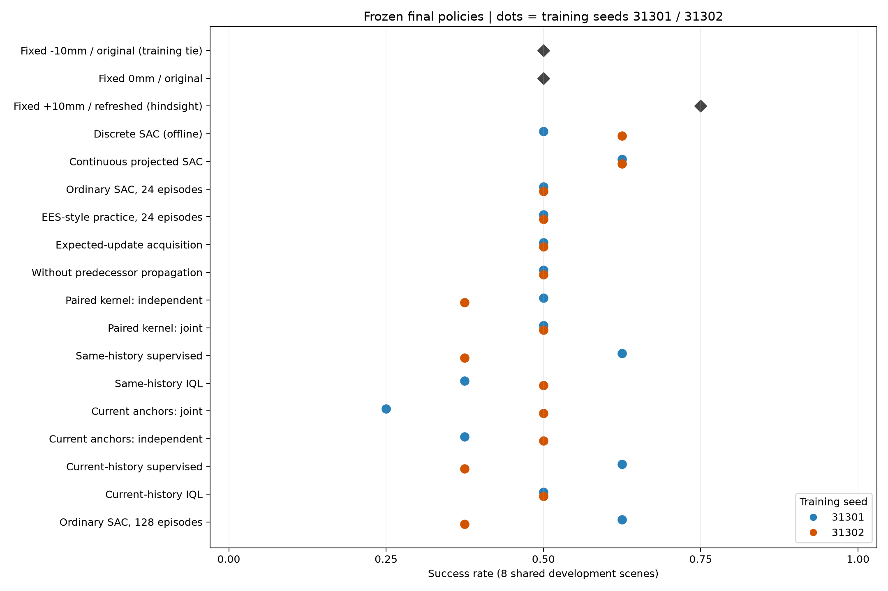
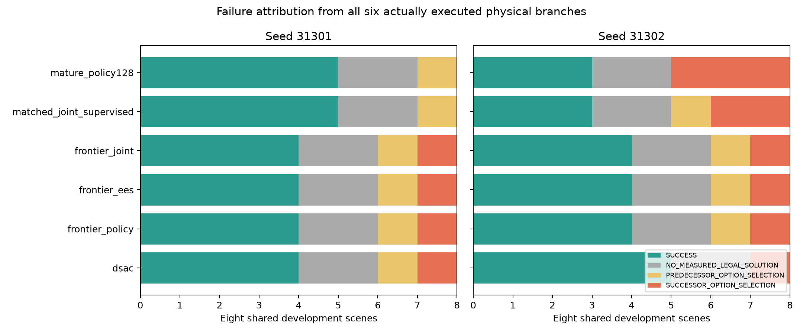
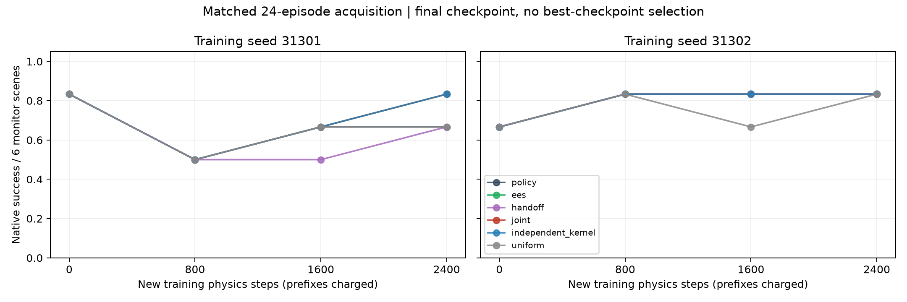
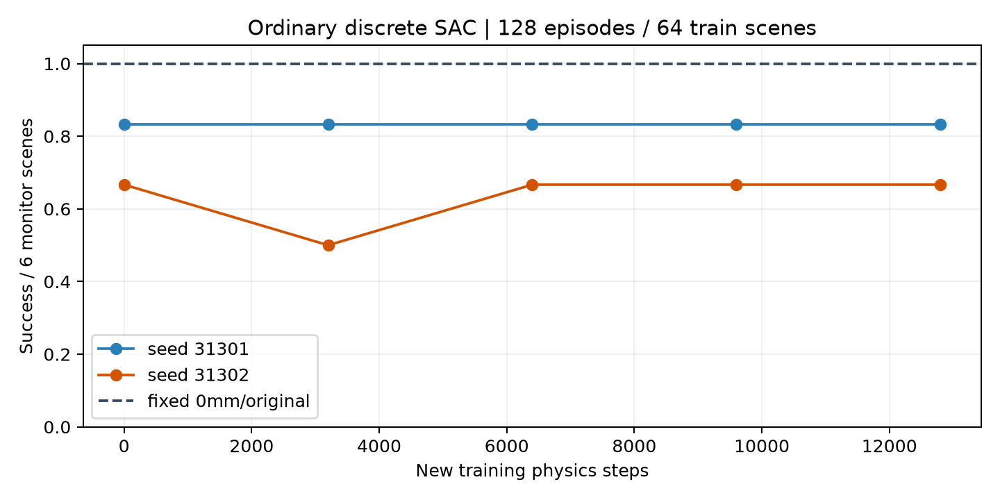
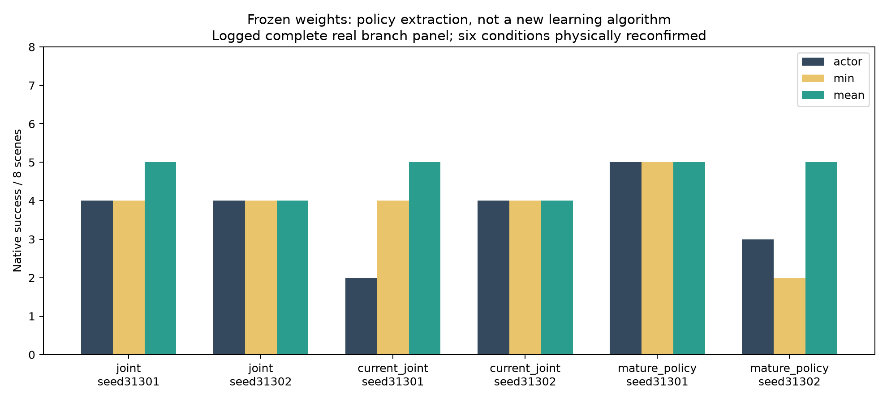
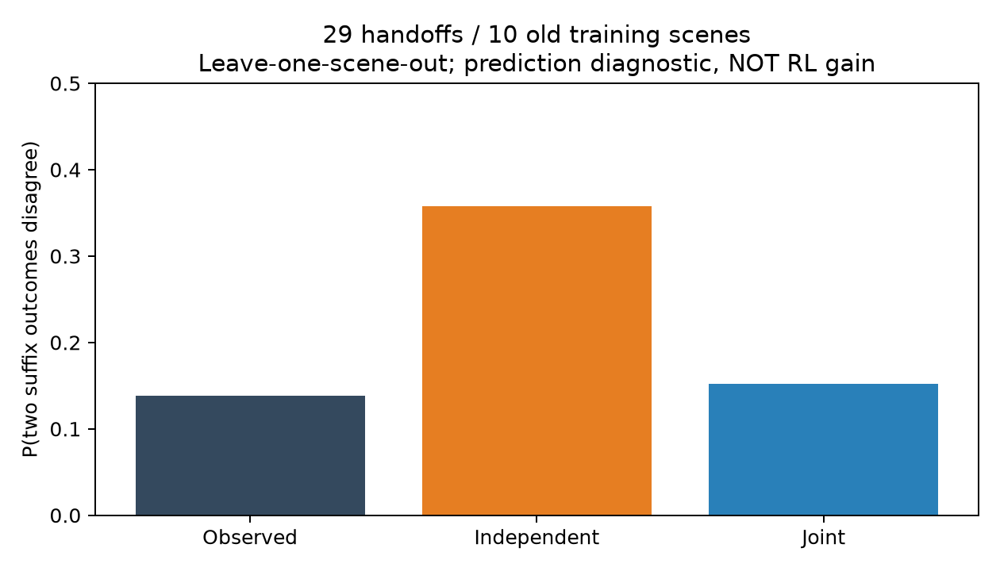
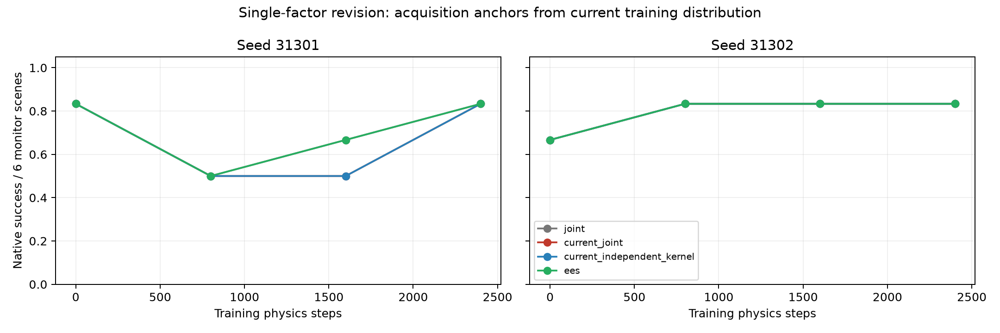

Physical Options → real handoffs → learned decisions
ARES single-paper research · native PegInsertionSide100 · two training seeds · no physical robot
Independent method advantage: UNVERIFIED. Prediction accuracy and correct action semantics are not algorithm gains.
Frozen final results
Eight predeclared fresh development scenes. Original54 policies frozen before first expansion physics; additional14-model revision frozen before reading expansion outcomes. No sealed tests. Some comparator rows use an explicitly labeled real finite-branch panel rather than new rollouts.
| Policy | Seed31301 | Seed31302 |
|---|
| dsac | 4/8 | 5/8 |
| projected | 5/8 | 5/8 |
| frontier_policy | 4/8 | 4/8 |
| frontier_uniform | 4/8 | 4/8 |
| frontier_ees | 4/8 | 4/8 |
| frontier_handoff | 4/8 | 4/8 |
| frontier_local | 4/8 | 4/8 |
| frontier_independent_kernel | 4/8 | 3/8 |
| frontier_joint | 4/8 | 4/8 |
| matched_joint_supervised | 5/8 | 3/8 |
| matched_joint_fqi | 5/8 | 3/8 |
| matched_joint_iql | 3/8 | 4/8 |
| matched_joint_cql | 3/8 | 4/8 |
| matched_joint_stap | 4/8 | 5/8 |
| frontier_current_joint | 2/8 | 4/8 |
| frontier_current_independent_kernel | 3/8 | 4/8 |
| matched_current_joint_supervised | 5/8 | 3/8 |
| matched_current_joint_iql | 4/8 | 4/8 |
| mature_policy128 | 5/8 | 3/8 |
fixed00=4/8; fixed01=5/8; fixed10=4/8; fixed11=4/8; fixed20=4/8; fixed21=6/8

Complete results, costs and rescue/regression pairs
Failure and critic-greedy diagnosticsActual online learning


All matched24-episode methods share identical warmup physics and checkpoint. Every full prefix is charged. Larger128-episode ordinary SAC is reported separately.
Policy extraction exposes a remaining baseline defect

Posthoc development diagnosis with frozen weights. Selected conditions directly confirmed in48 native episodes. Standard baseline extraction, not an independent method contribution.
A concrete acquisition mechanism, not another auxiliary head
Enumerate possible paired suffix outcomes → virtual suffix/predecessor update → score initial-action decision change → acquire full real trajectories → ordinary discrete SAC update. Revisions test coverage and pair-outcome dependence while keeping physical control unchanged.


Same marginal probabilities; covariance is the ablation. Better outcome prediction alone does not establish improved deployment.